遊びで植物を育てよう
2024/10/06
今年の梅の挿し木は失敗しました。
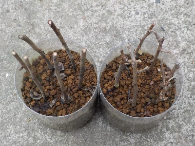
何が悪かったのかな？。全滅です。
ひょっとして気温が高すぎたのかな？。もっと日差しが弱いところに置いた方がいいのかな？。
次やるときはペットボトルを2本並べて置かないで、違う場所に置こうと思います。
【梅TOP】
【果物TOP】
【園芸TOP】
2024/06/15
梅を収穫したついでに剪定して挿木しました。
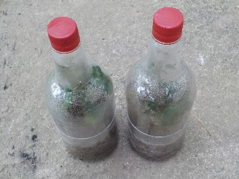
梅を収穫しながら夏季剪定しました。切った枝で挿木です。
近頃ペットボトルでの挿木はやっていませんでしたが、梅はペットボトルの方が成功率が高かったのでやりました。
【梅TOP】
【果物TOP】
【園芸TOP】
2024/02/25
鉢植えの梅が開花しました。
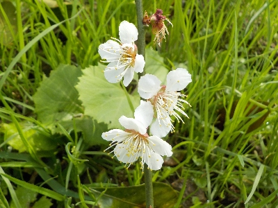
2021年に挿し木で増やした梅が開花しました。
鉢植えなので、好きなアングルで写真が撮れます。
【梅TOP】
【果物TOP】
【園芸TOP】
2024/01/28
梅の花がちょびっと咲きました。
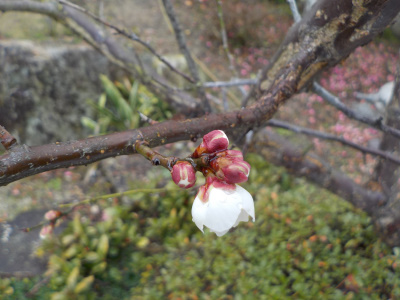
本当にちょっとだけ開花しました。
ご近所で沢山咲いてる木がありました。個体によって色々ですね。
【梅TOP】
【果物TOP】
【園芸TOP】
2023/06/24
梅の挿し木をまたしました。

剪定した枝を使って挿し木をしました。
今回はプレステラを使って10本挿し木しました。
去年は全滅だったので、成功して欲しいです。
【梅TOP】
【果物TOP】
【園芸TOP】
2023/06/11
落ちてた梅を拾って帰りました。
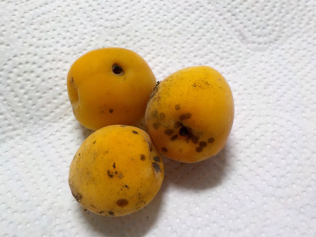
おちてた梅です。木に付いてるものはまだ青いので、熟れる前に落ちてます。虫の被害もあるかもしれません。
綺麗な梅は食べたいので、育てる種はこれでいいかなと思ってます。
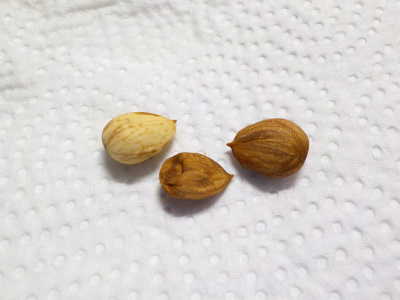
核を割って中身を取り出しました。
湿気ったキッチンペーパーにくるんで置いてます。芽が出ればラッキーくらいに思ってやります。
【梅TOP】
【果物TOP】
【園芸TOP】
2023/05/05
梅の木の鉢をサイズアップしました。
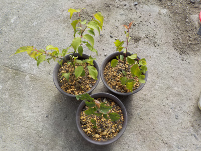
プレステラで育てていた梅の木を、ちょっと大きい鉢に植替えしました。
今挿し木の梅で育っているのはこの3本です。
【梅TOP】
【果物TOP】
【園芸TOP】
2023/04/15
梅の実が多く出来ています。
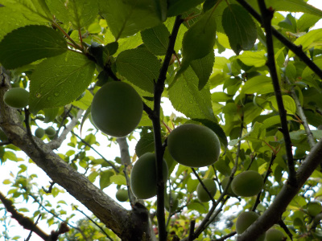
梅の実が落ちずに順調に育っています。
収獲が楽しみです。
【梅TOP】
【果物TOP】
【園芸TOP】
2023/03/05
挿し木の梅は少し遅れて花が咲きました。
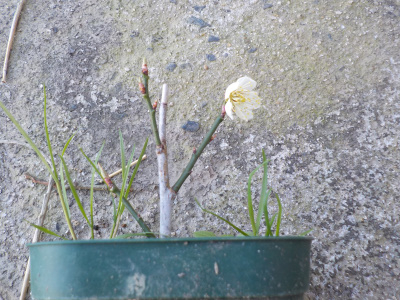
一昨年挿し木した梅の木です。
まだ小さいですね。
今年はしっかり日光に当てて、大きく成長させたいと思っています。
【梅TOP】
【果物TOP】
【園芸TOP】
2023/02/26
天気が良かったので梅の花の写真を撮りました。
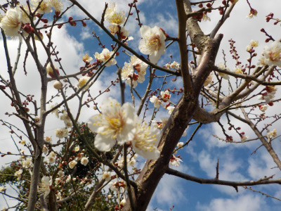
晴れた日に写真を撮ると、明るくキレイに写っていいですね。
写真撮ってて楽しかったです。
【梅TOP】
【果物TOP】
【園芸TOP】
2023/02/19
夜になってから梅が咲いていることに気がつきました。

近所のあちこちで梅が咲いているのを見ていますが、自分の家の梅は見ていませんでした。
気付いた時はもう夜になってました。
暗いので写真がボケてます。明るいうちに見れば良かったです。
【梅TOP】
【果物TOP】
【園芸TOP】
2022/10/08
今年の梅の挿し木は全滅しました。
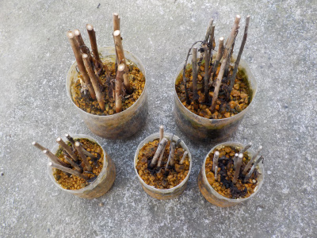
沢山挿し木しましたが今年は全滅です。狭いスペースにぎゅうぎゅうに詰め込んだのが悪かったと思ってます。
ペットボトル1本に挿し木3本までに今後はしようと思います。
次は花が咲き終わった頃に挿し木をしようと思ってます。
【梅TOP】
【果物TOP】
【園芸TOP】
2022/06/12
今年もペットボトルで梅の挿し木をしました。
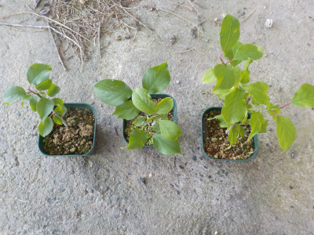
去年の挿し木は3本育っています。
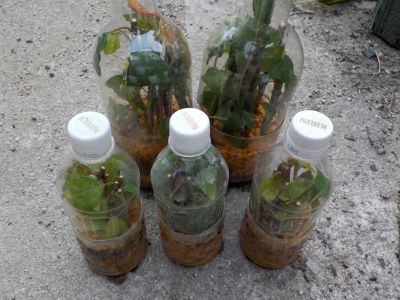
今回も沢山挿し木したので、きっと何本かは根っこがでるでしょう。
【梅TOP】
【果物TOP】
【園芸TOP】
2022/03/13
ペットボトルの梅を植え替えしました。
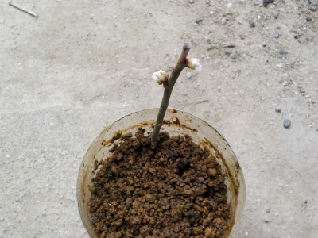
去年挿し木をしたもので、根っこが出なかったものをペットボトルに入れっぱなしにしていました。
1本生きてて花が咲きそうです。
根っこがとても小さかったので、傷めないように丁寧に小さな鉢に植替えしました。
【梅TOP】
【果物TOP】
【園芸TOP】
2022/02/20
去年挿し木した梅です。花が咲きました。
2022/02/12
梅が咲いています。
2022/01/23
挿し木の梅の何かが膨らんできました。
2021/10/31
挿し木の梅が虫に食べられてしまいました。
2021/08/15
梅の挿し木を5本鉢上げしました。
2021/05/29
梅の挿し木を大量にしました。
2021/03/14
梅の挿木から芽がいっぱい出ました。
2020/10/04
梅の鉢を大きくしました。
2020/06/07
梅の挿し木がしおれてしまいました。
2020/05/10
今年も梅の挿し木をしました。
【梅TOP】
【果物TOP】
【園芸TOP】
2020/03/08
挿し木の梅を植え替えしました。
2020/02/23
挿し木の梅が咲きました。
2020/02/15
挿し木の梅に蕾がありました。
2019/09/28
梅の挿し木に成功しました。
2019/06/23
ペットボトルで梅の挿し木に挑戦。
2019/01/13
梅が綺麗でした。
2018/06/24
梅の挿し木はもうしないかな。
2018/06/10
梅の挿し木に挑戦
2018/03/18
梅の花も終わりかけです。
2018/02/24
今年も梅が咲きました。
【梅TOP】
【果物TOP】
【園芸TOP】
2017/02/05
梅が咲き出しました。
2014/03/08
紅梅も咲き出しました。
2014/02/09
今年も梅の季節です。
2013/02/03
もう梅が咲いてる。
2013/04/28
梅の実大量です。
【梅TOP】
【果物TOP】
【園芸TOP】
梅干し食べたいから育てます。
【おいしいものを食べよう。】【たくさん寝よう。】
【ソロ活をしよう!】【季節感のあることをしよう。】【動画視聴はほどほどに。】【当サイトの全てのコンテンツは無断転載禁止です。】